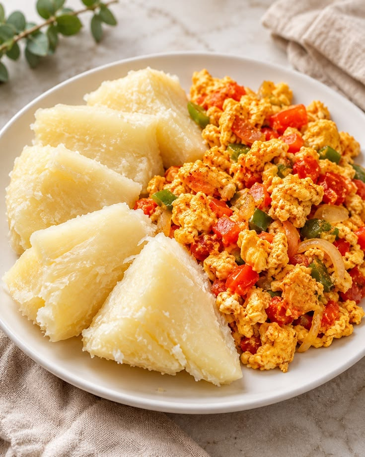

Boiled Yam and Egg Sauce is a simple and delicious meal made with soft boiled yam served with spicy egg sauce. The sauce is prepared with eggs, tomatoes, onions and fresh pepper.
This meal is suitable for breakfast, lunch or dinner and provides a tasty and satisfying food option.
| Specification | Details |
|---|---|
| Food Name | Boiled Yam and Egg Sauce |
| Category | Nigerian Food |
| Main Ingredients | Yam, eggs, tomatoes, onions and pepper |
| Serving Size | 1 plate |
| Price | N4,000 |